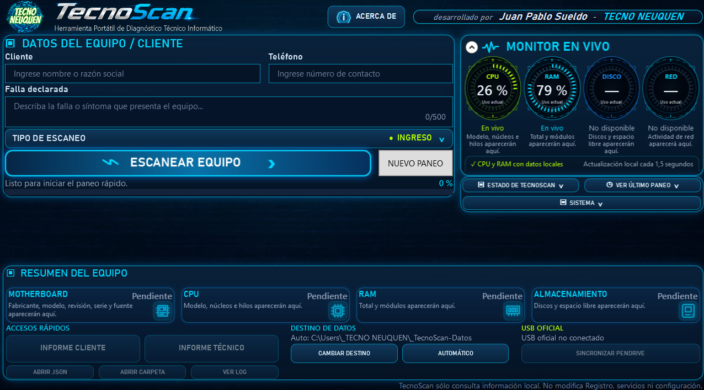

Diagnóstico técnicoInformación clara de tu equipo
Sólo para PC
Windows 10 / 11
Portable · Sin instalación
Sólo descomprimir y ejecutar
Gratis y seguroSin costos ocultos
Portable y livianoNo requiere instalación
Información detalladaHardware y sistema
Tu privacidad importaProcesamiento local
Diagnóstico
completo
de tu equipo
en minutos

Cómo usar TecnoScan (en 5 pasos)
- 1Descargá
el ZIP - 2Descomprimilo
- 3Ejecutá
INICIAR_TECNOSCAN.vbs - 4Presioná
ESCANEAR EQUIPO - 5Al finalizar, elegí
ENVIAR A TECNO NEUQUÉN